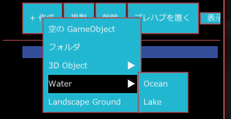
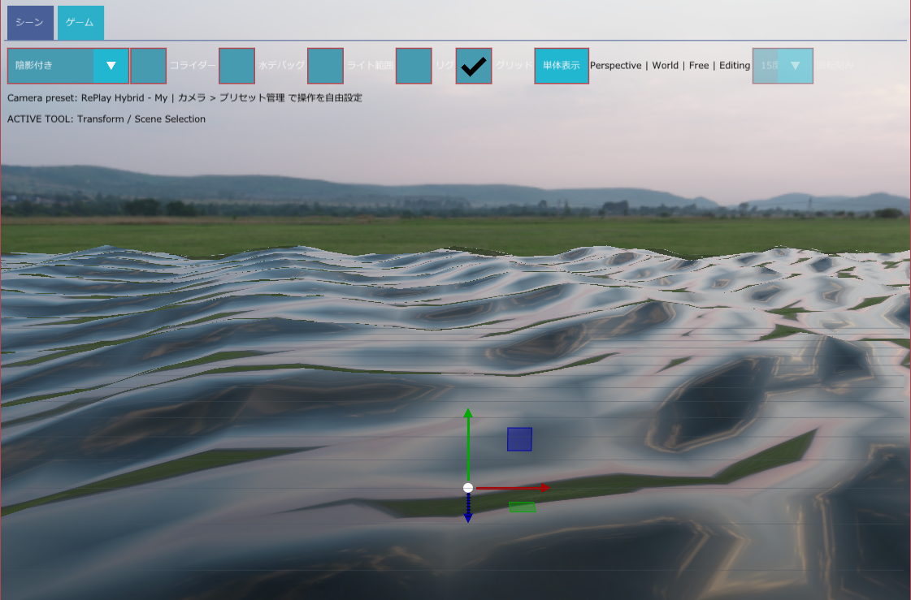
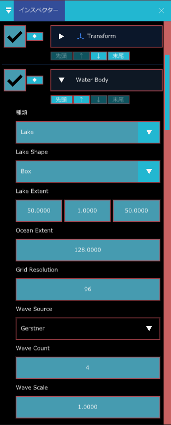
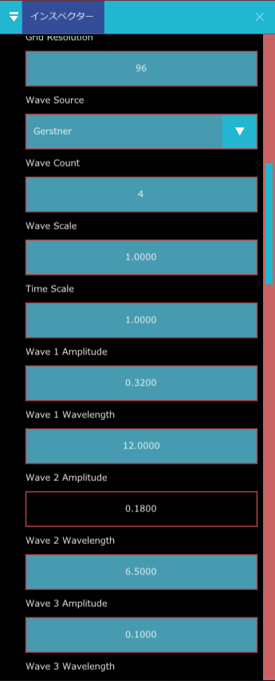
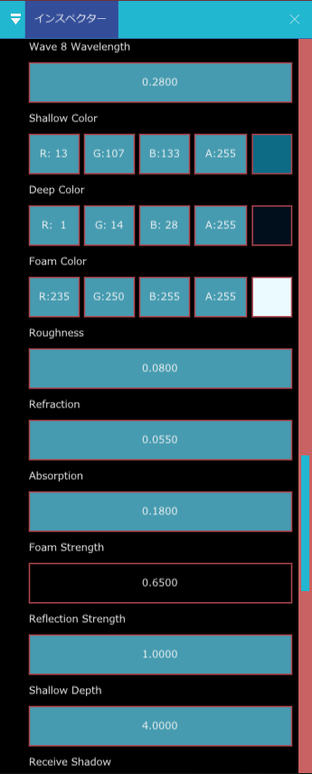
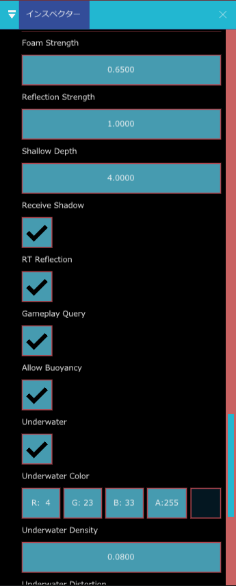
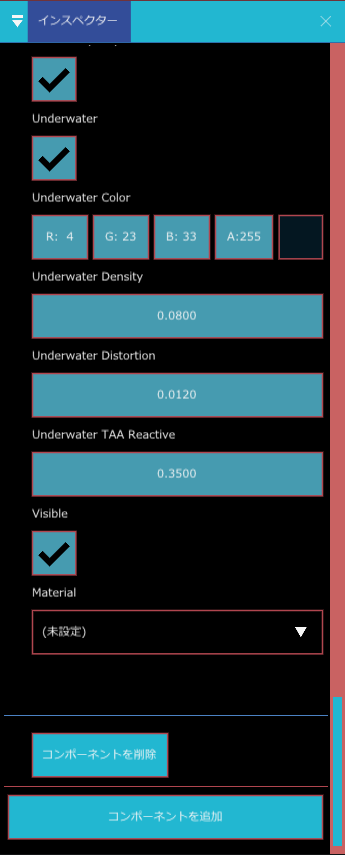

Water Body（水域）
海（Ocean）や湖（Lake）の水面を作る部品です。波の動き、光の反射、水を通した屈折、泡、水中に入ったときの画面の色までをこの 1 つで持ちます。水面の高さや流れを物理の側から調べる用途にも使われ、Buoyancy を付けた物体はこの水面に浮きます。
こんなときに使う
- 海岸や港の海、池や湖を置きたいとき
- 箱・ボート・流木などを水に浮かべたいとき（Buoyancy と組み合わせる）
- 水に入ったときに、画面を青緑に染めたい・ゆがませたいとき
- 波の大きさや向き、色、泡の量を自分で調整したいとき
水を作る
階層パネルの ＋ 作成 を押すと、Water の項目があります。その右に Ocean と Lake が出て、選ぶと Water Body が付いた GameObject が 1 つ作られます。

Lake を選んで作ると、種類は Lake、Lake Shape は Box、Lake Extent は 50, 1, 50 の設定で作られます（Ocean Extent の欄には 128 が入ります）。

海と湖の違い
| 種類 | 範囲の決まり方 | 向いている場所 |
|---|---|---|
| Ocean | Ocean Extent（既定 750）の広さの水面が広がります | 水平線まで続く海 |
| Lake | Lake Shape（Box / Sphere）と Lake Extent で決めた範囲だけに水が入ります | 池・湖・プール・水路 |
プロパティ
項目が多いので、働きごとに分けて書きます。数値の右の範囲は、インスペクターで入力できる範囲です。
種類と範囲

| 表示名 | 内部名 | 種類 | 既定値 | 範囲 | 説明 |
|---|---|---|---|---|---|
| 種類 | kind | 選択 | Ocean | Ocean か Lake を選びます | |
| Lake Shape | shape | 選択 | Box | Lake のときの水の形です。Box（箱形）か Sphere（球形） | |
| Lake Extent | extent | 3 つの数 | 100, 1, 100 | Lake の大きさです。X・Y・Z（横・深さ・奥行き）の順に入れます | |
| Ocean Extent | ocean_extent | 小数 | 750 | 16〜100000 | Ocean の水面の広がりです |
| Grid Resolution | grid_resolution | 整数 | 96 | 8〜256 | 水面の細かさ（網目の数）です。大きいと波が滑らかになり、重くなります |
波

| 表示名 | 内部名 | 種類 | 既定値 | 範囲 | 説明 |
|---|---|---|---|---|---|
| Wave Source | wave_source | 選択 | Gerstner | 波の作り方です。None は波なし（平らな水面）、Gerstner は計算で波を作ります。Texture (reserved) は将来用に予約されていて、今は使えません | |
| Wave Count | wave_count | 整数 | 4 | 0〜8 | 重ねる波の数です。下の Wave 1〜8 のうち、この数だけが使われます |
| Wave Scale | wave_scale | 小数 | 1 | 0〜8 | 波全体の高さの倍率です |
| Time Scale | time_scale | 小数 | 1 | −4〜4 | 波の進む速さです。マイナスにすると逆向きに進みます |
| Wave 1〜8 Amplitude | wave0_amplitude 〜 wave7_amplitude | 小数 | 0.32 / 0.18 / 0.10 / 0.06 / 0.035 / 0.025 / 0.018 / 0.012 | 0〜20 | 各波の高さ（振れ幅）です。番号が大きいほど細かく小さな波が既定です |
| Wave 1〜8 Wavelength | wave0_wavelength 〜 wave7_wavelength | 小数 | 12 / 6.5 / 3.2 / 1.7 / 0.95 / 0.62 / 0.41 / 0.28 | 0.1〜500 | 各波の波長（山から山までの長さ）です。大きいとゆったりした波になります |
見た目

| 表示名 | 内部名 | 種類 | 既定値 | 範囲 | 説明 |
|---|---|---|---|---|---|
| Shallow Color | shallow_color | 色 | R 13, G 107, B 133 | 浅いところの水の色 | |
| Deep Color | deep_color | 色 | R 1, G 14, B 28 | 深いところの水の色 | |
| Foam Color | foam_color | 色 | R 235, G 250, B 255 | 波頭や岸辺にできる泡の色 | |
| Roughness | roughness | 小数 | 0.08 | 0〜1 | 水面のざらつきです。小さいほど鏡のように映り、大きいとぼやけます |
| Refraction | refraction_strength | 小数 | 0.055 | 0〜0.5 | 水の中の物が曲がって見える強さです |
| Absorption | absorption | 小数 | 0.18 | 0〜5 | 深くなるほど光が吸われて暗くなる強さです |
| Foam Strength | foam_strength | 小数 | 0.65 | 0〜4 | 泡の量です。0 で泡が出ません |
| Reflection Strength | reflection_strength | 小数 | 1 | 0〜4 | 周りの景色が水面に映る強さです |
| Shallow Depth | shallow_depth | 小数 | 4 | 0.01〜100 | この深さまでを「浅い」として、Shallow Color から Deep Color へ変えていきます |
| Receive Shadow | receive_shadow | オン・オフ | オン | 水面に影を落とすかどうか | |
| RT Reflection | rt_reflection | オン・オフ | オン | レイトレーシングを使った正確な反射を使うかどうか。オフだと画面の映り込みなど別の方式に頼ります | |
| Visible | visible | オン・オフ | オン | オフにすると水面を描きません | |
| Material | material_asset | アセット（Material） | （空） | 水面のマテリアルです。空なら標準の水を使います。自作するときは、標準の Water か、#pragma replay_water を持つ Shader Composer / HLSL のマテリアルを指定します |
ゲームとの連携

| 表示名 | 内部名 | 種類 | 既定値 | 説明 |
|---|---|---|---|---|
| Gameplay Query | query_enabled | オン・オフ | オン | 物理などが「この位置の水面の高さ・流れ」を調べられるようにします |
| Allow Buoyancy | allow_buoyancy | オン・オフ | オン | Buoyancy を付けた物体をこの水で浮かせるかどうか。Gameplay Query もオンである必要があります |
水中の表現

カメラが水面より下に入ったときの画面の表現です。
| 表示名 | 内部名 | 種類 | 既定値 | 範囲 | 説明 |
|---|---|---|---|---|---|
| Underwater | underwater_enabled | オン・オフ | オン | 水中の表現を使うかどうか | |
| Underwater Color | underwater_color | 色 | R 4, G 23, B 33 | 水中の霧の色 | |
| Underwater Density | underwater_density | 小数 | 0.08 | 0〜5 | 水中の霧の濃さ。大きいと遠くが見えなくなります |
| Underwater Distortion | underwater_distortion | 小数 | 0.012 | 0〜1 | 水中の画面のゆらぎの強さ |
| Underwater TAA Reactive | underwater_reactive | 小数 | 0.35 | 0〜1 | 水中で残像（TAA）を抑える強さ。ぶれや残像が気になるときに上げます |
使い方の例
湖を置く
- 階層パネルの ＋ 作成 > Water > Lake を選びます。「Lake」という GameObject ができます。
- （自分で組み立てるなら、＋ 作成 > 空の GameObject を作り、インスペクターの コンポーネントを追加 > Rendering > Water Body を選び、種類 を Lake にします。）
- Lake Extent を、たとえば 20, 2, 20 にします（横 20・深さ 2・奥行き 20）。
- Transform の位置を動かして、水面の高さを地面のくぼみに合わせます。
- 波を弱くしたいときは Wave Scale を 0.3 くらいに下げます。
物を浮かべる
- 階層パネルで ＋ 作成 > 3D Object > Cube を作り、水面の少し上に置きます。
- Cube に Rigidbody を追加します（種別は Dynamic のまま）。
- 続けて Buoyancy を追加します。
- Water Body の Gameplay Query と Allow Buoyancy がオンなことを確かめます。
- ゲームを実行（F5）します。Cube が水に落ちて浮きます。Buoyancy の In Water が「オン」になったら水に入っています。
海全体を作って泡を増やす
- Water Body を追加し、種類 を Ocean にします。
- Ocean Extent で見渡せる広さを決めます。広いほどGrid Resolution が足りなくなって波が粗く見えるので、その場合は Grid Resolution を上げます。
- Foam Strength を 1.2 くらいに上げると、波頭の泡が増えます。
ヒント波が重いときは、Wave Count を減らすか Grid Resolution を下げます。反射が映らない・暗いときは、Reflection Probe で反射を補えます。